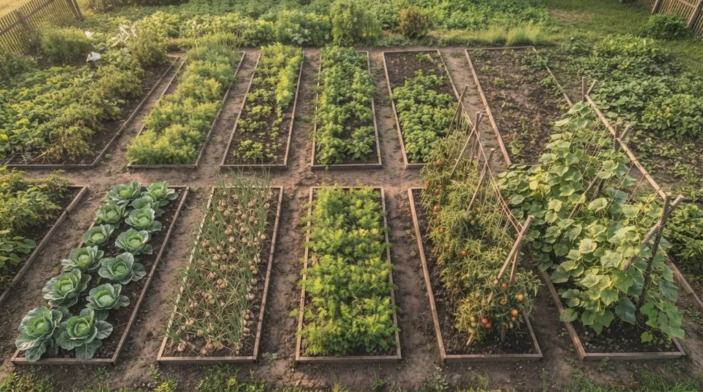

Коротко
- На городі чергують не види, а родини: споріднені овочі діляться хворобами.
- Мінімальна схема це три роки: два роки між культурами однієї родини.
- Не садіть помідори після картоплі, капусту після редиски, огірки після кабачків. Це одна родина.
- Для капусти постанова КМУ № 164 вимагає шести років до повернення на те саме поле. На городі такої паузи часто немає, тому відведіть їй найдальшу грядку.
- Приклад п’ятирічної схеми для городу наведено нижче.
Чому овочі чергують за родинами
На полі ми дивимося на попередник як на агрономічну категорію: пар, озимі, зернобобові. На городі простіше й суворіше. Споріднені рослини хворіють одними хворобами, тож якщо хвороба лишилася в ґрунті після картоплі, томатам вона вдалася так само, як картоплі.
Тому правило таке: між культурами однієї родини мають пройти щонайменше два роки, коли на тому місці ростуть інші. Це дає трирічну схему. Cornell Extension, чия таблиця родин лежить в основі цієї статті, радить саме її.
| Родина | Культури |
|---|---|
| Цибулеві | цибуля, часник, порей, шалот |
| Капустяні | капуста, броколі, цвітна, кольрабі, редис, ріпа, бруква, гірчиця |
| Гарбузові | огірок, кабачок, гарбуз, диня, кавун |
| Пасльонові | картопля, помідор, перець, баклажан, фізаліс |
| Селерові | морква, пастернак, селера, петрушка, кріп, фенхель |
| Лободові | столовий буряк, мангольд, шпинат |
| Бобові | горох, квасоля, конюшина, вика |
| Айстрові | салат, цикорій, соняшник, топінамбур |
Таблиця попередників
У колонці про попередники зібрано поради з усталеної практики. Жорсткого нормативу тут немає, тому дивіться передусім на колонку про родину: те, що росло з нею в спорідненні, на це місце не повертайте.
| Культура | Родина | Не ставити після цієї родини | Добрі попередники |
|---|---|---|---|
| Капуста | капустяні | редис, ріпа, бруква, гірчиця, інша капуста | горох, картопля, морква, буряк, помідори, огірки, кукурудза на силос |
| Огірки | гарбузові | кабачки, гарбуз, диня, кавун | коренеплоди, капуста, цибуля, помідори, картопля, горох |
| Помідори, перець, баклажани | пасльонові | картопля, інші пасльонові | огірки, капуста, бобові, коренеплоди, кукурудза на силос |
| Морква, пастернак | селерові | селера, петрушка, кріп, фенхель | картопля, огірки, рання капуста, однорічні бобові трави, помідори, баклажани, гарбузи, цибуля |
| Столовий буряк | лободові | мангольд, шпинат | огірки, рання капуста, картопля, помідори, бобові, цибуля |
| Горох, квасоля | бобові | між собою, конюшина, вика | картопля, огірки, помідори, столовий буряк, цибуля, капуста |
Зверніть увагу на закономірність: у всіх рядках добрі попередники належать до інших родин, ніж сама культура. Це не збіг, це та сама логіка про хвороби.
Капуста вимагає більше
У постанові КМУ № 164 серед польових культур капуста названа з паузою в шість років, довшою, ніж для більшості. Це польовий норматив для господарств, а не для городу, де грядок небагато і шести років не набереш. Тому на городі капустяним відводять найдальшу грядку й повертають їх у схему якнайрідше, а за ознак хвороби в ґрунті збільшують паузу.
Приклад п’ятирічної схеми для городу
Це ілюстрація, а не готовий проєкт: склад культур підлаштуйте під ваші смаки. Тут п’ять грядок і п’ять груп культур, які посуваються на один крок щороку. Кожна родина повертається на ту саму грядку через чотири роки, тобто з запасом над мінімальними двома.

| Рік | Грядка 1 | Грядка 2 | Грядка 3 | Грядка 4 | Грядка 5 |
|---|---|---|---|---|---|
| 1 | бобові | капустяні | гарбузові | пасльонові | буряк, цибуля, морква |
| 2 | капустяні | гарбузові | пасльонові | буряк, цибуля, морква | бобові |
| 3 | гарбузові | пасльонові | буряк, цибуля, морква | бобові | капустяні |
| 4 | пасльонові | буряк, цибуля, морква | бобові | капустяні | гарбузові |
| 5 | буряк, цибуля, морква | бобові | капустяні | гарбузові | пасльонові |
Порядок збережено з урахуванням таблиці попередників: капуста йде після гороху, огірки після капусти, помідори після огірків, а буряк і цибуля після помідорів. Горох замикає коло після буряку й цибулі.
Якщо у вас менше грядок, злийте дві родини в одну групу, але стежте, щоб споріднені культури не стояли в одній групі. А щоб підібрати культурам правильний pH, дивіться таблицю оптимальної кислотності. Загальні принципи сівозміни зібрані в посібнику.
Часті запитання
Чи можна садити помідори після картоплі?
Не варто. Картопля й помідори належать до однієї родини, пасльонових, і ділять між собою хвороби. Краще брати для помідорів ділянку, де росли огірки, капуста чи бобові.
Через скільки років можна повертати культуру на те саме місце?
Мінімум через два роки роботи з неспорідненими культурами, тобто в трирічній схемі. Для капусти польовий норматив жорсткіший: шість років.
Що садити після цибулі й часнику?
За усталеною практикою після цибулі добре йдуть огірки, морква, столовий буряк і горох. Єдиного нормативу на це немає, тому головне правило залишається таким самим: не повторювати цибулеві.
Як чергувати культури, якщо грядок мало?
Розділіть город на три-п’ять частин за родинами й посувайте їх по колу. На двох грядках повноцінної схеми не вийде, чергування дасть лише рік паузи, тому краще розбити город бодай на три частини.

Директор НВ ТОВ «СІНТА», розробник органічних добрив ТМ GREENODIN.
Опубліковано 12 жовтня 2026. Оновлено 12 жовтня 2026.